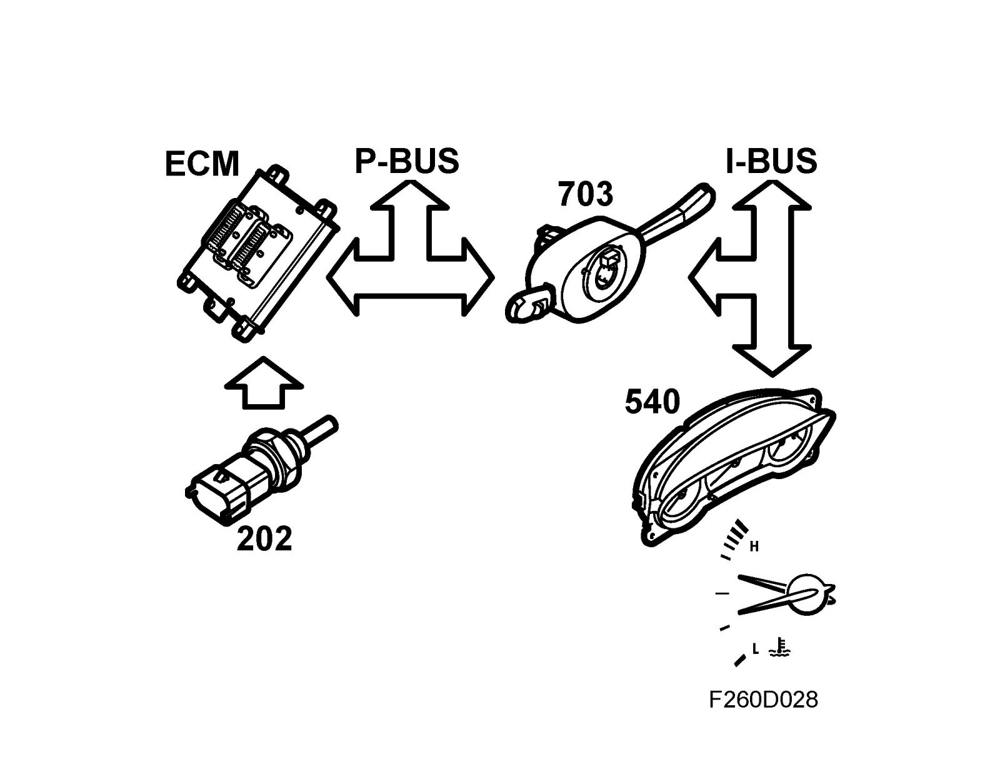
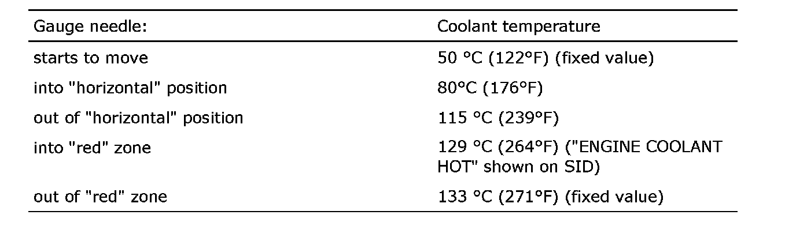

Coolant: Description and Operation
Coolant temperature
The coolant temperature gauge provides the driver with information on the engine coolant temperature.
The coolant temperature gauge is supplied with current and controlled from the main instrument unit.
The engine control module sends continuous information on the bus concerning the coolant temperature.
The coolant temperature gauge is divided into 5 fixed break points. The main instrument unit is programmed to move the gauge needle to the fixed break points at specific temperatures in order to provide a stable display at normal coolant temperatures.
The following break points are programmed in the main instrument unit (factory setting):
